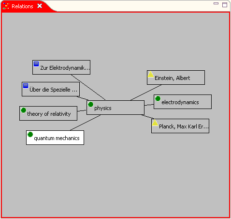
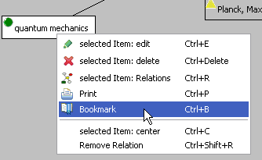

The Relations browser shows the central item and it's context, i.e. it's relations to other items.

The example shows the central term item "physics" in relation with seven other items (three term items, two text items and two person items). The related items are alphabetically ordered in concentric circles around the central item. You can move the focus using the arrow buttons. Clicking an item makes it focused too. Item having the focus are displayed with white background color (see the item "quantum mechanics" in the sample). The content of focus items is showed in the inspector view.

Context menu in the Relations browser.
You can apply the following actions on the active item (see the context menu in the Relations browser):
Ctrl+E opens the item editor.Ctrl+Delete deletes the item and all it's relations.Ctrl+R opens the item's relations editor.Ctrl+P opens the print
manager for that you can print the selected item and all it's relations
into a document.Ctrl+B creates a bookmark of the selected item.Ctrl+C moves the focus
item to the center. Another possibility for item centering is to click
an item having the Shift key pressed.Ctrl+Shift+R removes the
focus item's relation to the central item, thus, removes the focus item
from the browser display.There are two other possibilities to remove a relation using the Relations browser:
Note: It is possible to extend the application by providing additional, alternative Relations browsers. This can be done by implementing a plug-in extending the org.elbe.relations.browsers extension point. The Relations finder is an example where this has been done.